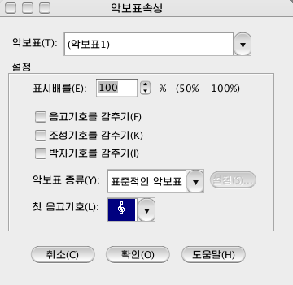

악보차림표\악보표속성...
악보표의 종류와 음고기호를 변경하거나
악보표단위로 음고기호, 조성기호, 박자기호를 표시, 비표시합니다. <악보\악보표속성...>차림표를 선택하면 <악보표속성>대화창이 표시됩니다.

- 악보표 : 표시속성을 변경하려는 악보표를 선택합니다.
- 표시배률：악보표의 표시배률을 설정합니다. 50％～100％사이에서 임의로 설정할수 있습니다.
이 기능을 리용하여 악보표의 표시크기를 변경할수 있습니다.
- 음고기호를 감추기 : 이 항목을 체크하면 선택된 악보표의 음고기호가
악보화면에 표시되지 않습니다.
- 조성기호를 감추기 : 이 항목을 체크하면 선택된 악보표의 조성기호가
악보화면에 표시되지 않습니다. 이 경우 <소절표시속성>대화창에서 조성기호를 <항상 표시한다>로 설정하여도 표시되지 않습니다.
- 박자기호를 감추기 : 이 항목을 체크하면 선택된 악보표의 박자기호가
악보화면에 표시되지 않습니다.
- 악보표의 종류 : 선택한 악보표를 어떤 악보표로 변경하겠는가를
설정합니다. 드람보,타브보로 변경하는 경우 <설정>단추를 찰칵하여 드람보 또는 타브보의 설정을
진행합니다. 드람보의 설정에 대해서는 <서고의
편집>의 [드람배치표]를
참고하십시오. 타브보의 설정에 대해서는 <타브보설정>을
참고하십시오.
- 첫음고기호:악보표의 제일 첫 위치에 놓이는 음고기호를 변경합니다. 음고기호입력도구띠에서 음고기호를 선택하여 악보표의 첫 위치를 찰칵하여도 음고기호를 변경할수 있습니다.
- 확인 : 이 단추를 누르면 악보표의 표시속성을 변경합니다.
- 취소 : 이 단추를 누르면 악보표의 표시속성을 변경하지
않고 원래 악보화면으로 돌아갑니다.